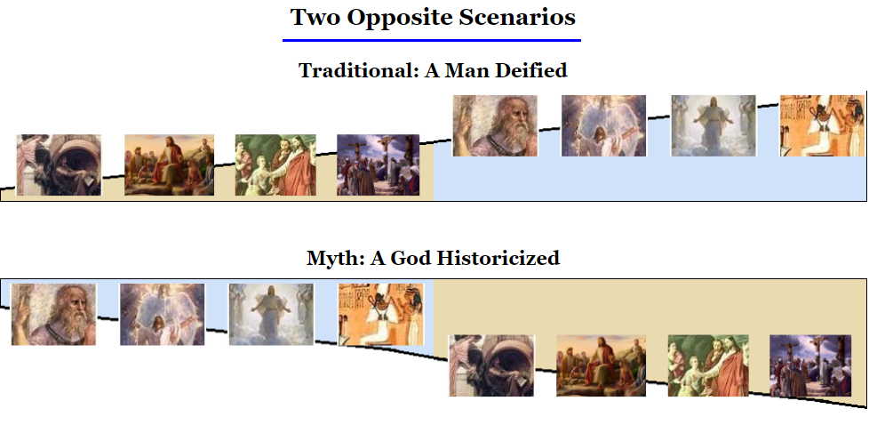
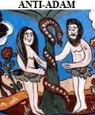
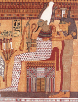
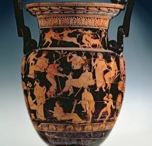
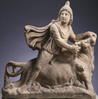
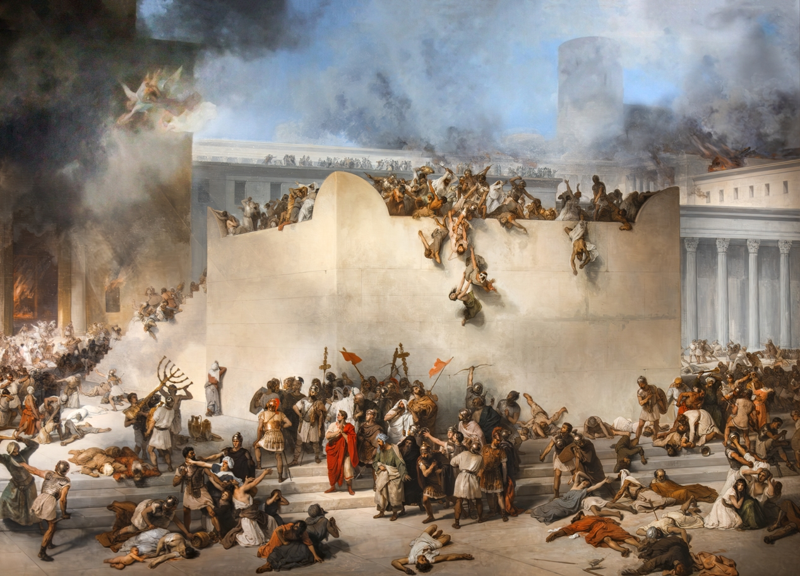
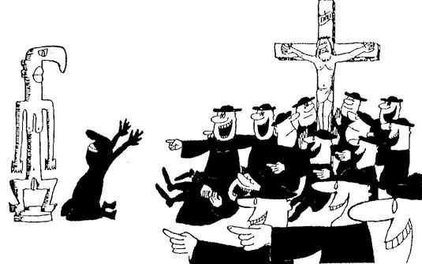
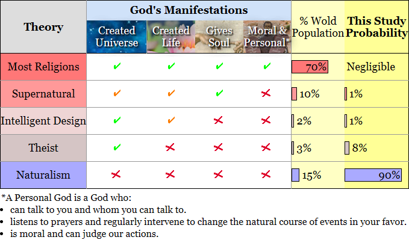

From Christ to Jesus
A Study on the Origin of Christianity
- It is inspired by the title of a book and documentary by current scholarship while taking the opposite side:
- See From Jesus to Christ by P. Fredriksen
- and the four-hour series From Jesus to Christ part 1 and part 2 by mostly members of the Jesus Seminar.
- "From Christ" refers to the Epistles where Jesus is only described as a heavenly being and savior."To Jesus" corresponds to the story of this God on earth which was created afterwards by the first Gospel.
- It is also a tribute to French historian P.L. Couchoud (1879-1959) who promoted the German thesis of the non-historicity of Jesus Christ. He found a passage that seems to say that because of his humiliating self-sacrifice, an unnamed heavenly being has been granted the mighty name of Jesus.
"And being found in human form, he humbled himselfPhilippians 2:8-11
And became obedient unto death [even death on a cross].
Therefore God has highly exalted him,
And bestowed on him the name that is above every name,
That at the name of Jesus, every knee should bow,
In heaven and on earth, and under the earth,
And every tongue confess that Jesus Christ is Lord
To the glory of God the Father."“The God-Man does not receive the name of Jesus till after his crucifixion. That alone, in my judgment, is fatal to the historicity of Jesus.”P.L. Couchoud, 1939, The Creation of Christ
AbstractIt is a certainty today that Christianity started by a man who became deified, whether this man was God himself, a miraculous prophet or an ordinary human being. Inside this paradigm, critical NT (New Testament) scholarship has shown that very little of what is said about this man, Jesus in the Gospels, can be true. However, despite an outstanding silence regarding this man in all the other records -Jewish, Pagan and especially Christian with the Epistles- (besides a couple of cases we will see chap. 6) none of these studies ever checked that their Gospel scenario -taught authoritatively by all seminaries and divinity schools- was correct.Here, without making any assumption, we analyzed everything the Epistles, the Gospels and early non-Biblical texts say about Jesus. We also examine the sources of the Epistles and Gospels, how the stories were created and how they spread. Then, we check the validity of a few possible references to a HJ (Historical Jesus) outside the Gospels.Contrary to what is universally taken for granted, the best scenario for the birth of Christianity is a God who became historicized. The two main outcomes are that there is a good chance Jesus didn't exist and a certitude that Christianity is wrong.
"Nobody is going to pour truth into your brain.
It’s something you have to find out for yourself"Noam ChomskySummary1-Where are
We Today?2-Critical
Bug3-The
Epistles4-The
Gospels5-Outside
the Bible6-Debating
ReferencesConclusion 1 - Where are we today?
The Quest for the HJ is a failureConcerning "One of the figure behind the ministry in Galilee", it seems that each possibility has been tried... and demolished two or three times. After 200 years of research or more, NT (New Testament) scholarship is still unable to reach a consensus on what kind of man was the founder of Christianity, Jesus of Nazareth.“In short, we collectively argue that the crumbling foundations of historical Jesus research must be exposed and that this exposure should lead to a programmatic shift in our historiographic methods.”Keith & Le Donne Jesus, Criteria and the Demise of Authenticity, pp. 3-5
And there are very good reasons for thatThe experts are primarily theologians, and most are—or have been—priests, pastors, or ministers, or are closely related to one through a spouse or parent. They work within a predominantly Christian environment in a country where affluent believers frequently support biblical studies through donations. As a result, most were trained in conservative divinity schools and universities that are largely closed to new ideas and that have a history of retaliating against some of their most capable professors and students."Everything we do at Moody falls under the authority of the Bible, which declares timeless truth that is relevant today and throughout every generation."None of the students of these schools were informed that numerous books present an alternative view which, although it may seem far-fetched at first, has never been refuted and offers straightforward explanations for many of today’s major problems:- the absence of a HJ in many Christian writings
- the lack of secular references to Jesus
- the profound unreliability of the Gospels
- the lack of links between Jesus' message and his death
- the unusually rapid elevation of Jesus
- the riotous diversity of early Christian beliefs...
"I decided to look into the matter [the existence of Jesus]. I discovered, to my surprise, an entire body of literature devoted to the question of whether or not there ever was a real man, Jesus. I was surprised because I am trained as a scholar of the New Testament and early Christianity, and for thirty years I have written extensively on the HJ, ... I have read thousands of books and articles... But I was almost completely unaware—as are most of my colleagues in the field—of this body of skeptical literature."B. Ehrman Did Jesus Exist?The entire field is influenced by agendas that extend far beyond the pursuit of historical truth. Much of the research is affected by significant methodological bias, circular reasoning, and—above all—deeply flawed assumptions."I am concerned, not with an unattainable objectivity, but with an attainable honesty."J.D. Crossan The Historical Jesus
Nevertheless, the field remains activeAnd recent discoveries have not strengthened the case for a HJ. A secular branch of scholars has already challenged much of the Old Testament and the Gospels—findings that, despite the Internet age, remain largely unknown to the general public.Christianity emerged as the great synthesizer of its era, a mosaic of Hellenic and Jewish elements that have now been largely uncovered, leaving no place for a God at its origin.Several historians, including G.A. Wells, E. Doherty and R. Carrier, have gone even further. Since the 1970s, they have developed numerous substantive arguments for a theory that would fundamentally reshape our understanding of early Christianity.2 - A Critical Bug in Mainstream ScenarioThe main problem in all mainstream theories is the absence of any HJ (Historical Jesus) in the first Christian writings.
A Man Deified or a God Historicized?
Of the two main scenarios proposed for the origins of Christianity, the ‘god-made-human’ model—known today as euhemerism, a common practice in antiquity—is almost never considered. Yet its pattern fits remarkably well what we have when we trace key terms associated with Jesus—such as ‘Lord,’ ‘Savior,’ ‘crucified,’ ‘died,’ ‘Nazareth,’ ‘Pilate,’ ‘Mary,’ ‘miracle,’ and ‘Jerusalem’—across two centuries of early Christian writings.Digging deeper, the 22 Christian documents known as the Epistles,- written by a dozen of different authors, Paul being the most prominent,
- many of which predate the Gospels by several decades,
- considered An Authoritative Guide
do contain more than 500 references to the Christ, the Son, Jesus (='Yahweh saves' in Hebrew) or the Lord, who is involved in three scenes: Sacramental Meal, Metaphoric Crucifixion, Visions of Resurrection.But, here is the thing, if we put aside three verses Gal. 1:19, 1 The. 2:15-16, 1 Tim. 6:13 that we will largely cover chapter 6,
in 80,000 words, these Epistles never mention any
- Place: Bethlehem, Nazareth, Jordan River, Sea of Galilee, Capharnaum, Bethsaida, Chorazin, Tyre, Cana, Nain, Bethany, Tiberias, Jericho, Caesarea Philippi... Jerusalem is never connected with Jesus' death. Any Temple, Gethsemane garden, hill of Calvary, empty tomb...
- Time: Only that "God sent his Son when the fullness of time had come" Gal 4:4, and that this mystery is revealed today to apostles like Paul and "behold, now is the accepted time; behold, now is the day of salvation." 2 Cor. 6:2. Jesus is never anchored in time. Nothing indicates that his crucifixion (or anything else) happened in a specific period in history, recently or not.
-
People: the king Herod who tried to kill him,
Any family member: Mary, Joseph, brothers, sisters.
Anyone Jesus met: John the Baptist, Judas, Lazarus, Jairus, the Samaritans,
Mary Magdalene, Joseph of Arimathea, Zacchaeus, Nicodemus, Simeon and Anna,
the Pharisees, the word 'Disciples', the Sanhedrin,
any Roman including Pilate...
Among all the Christians Paul named, there are three leaders in Jerusalem: James, John and Peter/Cephas. But nothing says they had a special authority from having known personally the HJ.
- Story: birth, baptism, 40 days in the wild, teaching at 12 in the Temple, fulfilling all OT prophecies, transfiguration, miracles (see below)... Any Passion story: entry into Jerusalem, cleansing of the Temple, betrayal by Judas, denial by Peter, trial by the Sanhedrin then the Romans, any Jewish mob, beating, Barabbas, earthquake, dark sky, apparition in flesh, doubting Thomas...
-
Saying*: any ministry, moral maxims, Cynic principles, Lord's prayer or any other prayer, sermons, prophecies,
anything about the 'Kingdom of God', his claim to be the 'Son of Man', words on the cross, view on Judaism... Any parables:
mustard seed, sower, tenants, fig tree, faithful servant, wheat & tares, leaven, hidden treasure, pearl, lost sheep,
laborers in the vineyard, two sons, ten virgins, good Samaritan, rich fool, prodigal son...
* Not counting when Jesus talks from the OT or Heaven or inside the head of an Apostle.
- Miracle: feeding 5000, then 4000, stills storm, walks on water, turns water to wine. Any raising of Jairus' daughter, widow's son and Lazarus. Any healing of blind man (2x), Gadarene demoniac, Syrophoenician girl, centurion's servant, official's son, ten lepers, blind Bartimaeus, cripple at pool...
Six Undisputable Historical Facts?
So we are left with six undisputable historical facts about Jesus in the Gospels that are ridiculously absent in the Epistles:- Baptized by John the Baptist.
- Galilean who preached and worked miracles.
- Limited his activity to Israel.
- Called up those who would become his disciples.
- Raised controversy over the role of the temple.
- Crucified outside Jerusalem by the Roman authorities.
[Only that he has been crucified]
The Argument from Silence
This kind of silence doesn't exist anywhere else. For examples:- In the NT, when an author talks about Jesus while being familiar with the Gospels:
"Men of Israel, hear me: I speak of Jesus of Nazareth, a man singled out by God and made known to you through miracles, portents and signs... God has made this Jesus, whom you crucified, both Lord and Christ."Speech of Peter in the Acts (2:22-36), written by Luke around 120-150 CE.
-
Or in another unrelated case, Pliny the Younger talking about the death of his uncle:During the eruption of Mount Vesuvius in 79 AD, in Pliny the Younger's mere 1,500 words we learn that his father died from respiratory failure after breathing the ashfall of Mount Vesuvius in his attempt to investigate the disaster and rescue survivors as commander of the Roman naval fleet stationed nearby.R. Carrier On the Historicity of Jesus
Anyone would have been curious to know what God did and said when he was among us. The Apostles would have been eager to talk about him, to preach what he said and why they think he was the Messiah. The opposite only leads to an absurd scenario.This is an Argument from Silence that current scholarship is unable to explain. There is very little chance that Christianity would have started by the words and life of Jesus of Nazareth because the first Christians never mentioned them!3 - Jesus in the Epistles: No Man Left Behind
Religious Context
In late antiquity, an impressive network of different Jewish beliefs, sects & schools had spread across the diaspora & Palestine. Following the Old Testament period, and heavily influenced by Zoroastrianism, some traditions adopted a multi-layered celestial cosmology populated by Angels, Archangels, Demons, and intermediate figures like the Son of Man."And a spirit took me and brought me up into the fifth heaven. And I saw angels who are called "lords." And the diadem was set upon them in the Holy Spirit, and the throne of each of them was sevenfold more brilliant than the light of the rising sun. And they were dwelling in the temples of salvation and singing hymns to the ineffable God....
I saw a soul which five thousand angels punished and guarded. They took it to the East and they brought it to the West. They beat its back with flaming whips and they gave it a hundred fiery lashes for each one daily... Truly, I, Zephaniah, saw these things in my vision.But I went with the angel of the Lord, and I looked in front of me and I saw gates. Then when I approached them I discovered that they were bronze gates. The angel touched them and they opened before him. I entered with him and found its whole square like a beautiful city, and I walked in its midst. Then the angel of the Lord transformed himself beside me in that place....
And I saw others with their hair on them. I said, "Then there is hair and body in this place?"
He said, "Yes, the Lord gives body and hair to them as he desires."Apocalypse of Zephaniah ~1st century BCE to 1st century CEMany Jews were also expecting the imminent arrival of the Messiah (=Christ in Greek). Although traditional views saw him as a triumphant king on earth, others were already describing him as an Archangel, a Heavenly Judge, an Intermediary to God...even possibly, as a suffering figure. These 'views' were drawn from revelations and scriptural re-interpretation."And thus I saw when my Lord went out from the seventh heaven into the sixth heaven. And the angel who had led me from this world was with me, and he said to me, "Understand, Isaiah, and look, that you may see the transformation and descent of the Lord.""The descent of the Son in the Ascension of Isaiah 1st century CE"From the beginning the Son of man existed in secret, whom the Most High preserved in the presence of his power, and revealed to the elect... They shall fix their hopes on this Son of man, shall pray to him, and petition him for mercy... And with this Son of man shall they dwell, eat, lie down, and rise up, for ever and ever..."The Book of Enoch 2nd century BCE to 1st century CESee also Book of Zechariah, Tobit, Book of Daniel, 2 Enoch, Apocalypse of Elijah, Martyrdom of Isaiah, 4 Ezra, Philo...This Jewish world syncretised with the Greek world, and absorbed the dominant philosophical & religious thoughts of the time, Platonism and Ancient Mysteries. The initiate was promised benefits of some kind in the afterlife. The whole process was presented in the resurrection of deities and other figures.The HJ paradigm would be at odds with this context because it contradicts Judaism's fundamental theological tenet and no other man would have been exalted this way. Most religions start by people claiming revelations from angels; Jesus would be for Paul what Ahura Mazda was for Zoroaster, Archangel Jibreel (Gabriel) for Muhammed (Islam) or Angel Moroni for Joseph Smith (Mormons).
Preaching Jesus Was
A thorough analysis of the Epistles shows they were preaching a very different Jesus than the one in the Gospels. Here he is The Son of God The Glory of God The Image and Likeness of God The Power and Wisdom of God The Love of God The First-Born of All Creation Co-Creator of the Universe Upholding the Universe All things have been created through him & for him All things are held together in him Through whom we exist A Spirit A Revealer and Mediator The Logos The Anti-Adam A Heavenly Judge A Heavenly Man.But not a clue that he was also Jesus of Nazareth or even A Recent Man in Galilee.
Preaching an Act of Salvation
This Jesus suffered a sacrificial crucifixion as a Forever High Priest Descending/ Ascending Redeemer Dying & Rising Savior. But there are no hints on Where? When? Who did it? or any Temple Betrayal Trial Jewish mob Barabbas... even an Empty tomb! See Passion Story.
Passion Story.
How?
The other fatal blow is that the authors tell us they solely knew this Jesus by Visiting the Heavens Visions Scriptures reinterpretations Being possessed by Christ Baptism & Eucharist. This is the way celestial figures have always been created including all the Jewish Angelology, the apocalyptic judge "Son of Man" and the Logos by Philo who have so much in common with this Jesus.Current scholarship cannot explain this sudden elevation of an unknown illiterate Jewish peasant to the rank of Son of God, sustainer of the universe and world's sin redeemer, nor the existence of large Christian communities like the one in Rome, right at the beginning.
Epistles Result
Believing in a Mythical Jesus
So, the dozen authors of the Epistles, including Paul, were believing in Jesus, not that Jesus was a recent man on earth.Drawing from Platonic thought that posits a duality between a lower material world and a higher, true spiritual realm ,"I know that I know nothing"this Messianic Jewish sect in big cities of the diaspora propagated the concept of a celestial Messiah, known through both visionary experiences and religious texts .Socrates"If any one imagines that he knows something,1 Cor. 8:2
he does not yet know as he ought to know."As for Plato's allegory of the cave:"At present all we see is the baffling reflection of reality;
we are like men looking at a landscape in a small mirror."1 Cor. 13:12"I know a man in Christ [himself] who fourteen years ago was caught up to the third heaven."2 Cor. 12.2"the gospel he [God] promised beforehand through his prophets in the Holy Scriptures regarding his Son,"Rom. 1:1-2. see also Rom. 16:25-26, 1 Cor. 1:1"For I delivered to you as of first importance what I also received [from God], that Christ died for our sins in accordance with the scriptures that he was buried, that he was raised on the third day in accordance with the scriptures"1 Cor. 15:3-4Jesus was presented as the Son of God, embodying multiple divine roles, including the exalted Son of Man, the divine Logos, and the personification of Jewish Wisdom ."He reflects the glory of God and bears the very stamp of his nature, upholding the universe by his word of power."Heb. 1:3"The Son is the image of the invisible God, the first-born of all creation; for in him all things were created, in heaven and on earth, visible and invisible... all things have been created through him and for him. And he exists before everything and all things are held together in him".Col. 1:15-17"Christ the power of God and the wisdom of God."1 Cor. 1:24. see also 1 Cor. 8:6, 2 Cor. 4:4, Rom. 8:39"For the Lord himself will come down from heaven, with a loud command, with the voice of the archangel and with the trumpet call of God, and the dead in Christ will rise first. After that, we who are still alive and are left will be caught up together with them in the clouds to meet the Lord in the air."1 Thes. 4:16-17. see also 2 Tim. 4:8 and Rev. 1:10-18"Christ ... is at the right hand of God and is also interceding for us."Romans 8:34Some added a central doctrine in Christian theology where Christ is the figure who reverses the consequences of Adam's disobedience through a mythical sacrifice. .
"For as in Adam all die, so in Christ all will be made alive."1 Cor. 15:21-22. see also Rom. 5:12-19 and 1 Cor. 15:40-49"On the cross he discarded the cosmic powers and authorities like a garment; he made a public spectacle of them and led them as captives in his triumphal procession."Col. 2:15. see also Ephesians 6:12 and Titus 3:5-6This ritual reflects the mythic sacrifices of popular gods like Attis, Mithra, Osiris, Adonis, Dionysos...


All these figures, Jewish or Pagans, are purely mythological or theological concepts not based on historical individuals.4 - Jesus in the Gospels: Facts or Fictions?? ? ? ?After Paul came the First Jewish-Roman War (66-74 CE)."By the end of that same [first] century, after eight years of class warfare and colonial revolt, the Jewish homeland was devastated, Jerusalem and its great Temple were destroyed, and leadership had shifted its paradigm from Temple, priest, and sacrifice to Torah, rabbi, and study. That is religious paradigm shift writ large."J.D. Crossan The Power of Parable
This period was also a time of- Midrash where Jews were transposing past sacred-scenes into current time...
- Ancient Greek Novels/Romances (five survived completely from antiquity).
- Hellenic Philosophies including Cynicism.
- Martyrdom Stories. The idea of sacrificing oneself for one’s religious principles, country, or philosophical ideals was remarkably common.
A Pattern of the Ancient World
The ancient world was full of local and national traditions about men, semi-divine figures or gods involved in the beginnings of religions, communities and nations."Beginning in protohistorical times many civilizations and kingdoms adopted some version of a heroic model national origin myth, including the Hittites and Zhou dynasty in the Bronze Age; the Scythians, Wu-sun, Romans and Koguryo in Antiquity; Turks and Mongols during the Middle Ages; and the Dzungar Khanate in the late Renaissance."C. Beckwith 2009 Empires of the Silk RoadGreek and Hebrew founding myths established the special relationship between a deity and local people, who traced their origins from a hero and authenticated their ancestral rights through the founding myth.
The First Gospel
In this literary context (plus the religious one seen for the Epistles), the story of Jesus of Nazareth appeared for the first time in the Gospel of Mark, sometime around 80 CE. Following the ancient Jewish process of inventing historico-religious stories, an unknown individual we call today Mark, created a supernatural (almost 1 fantastical thing every 6 verses) and symbolic tale where many scenes -birth, temptation, baptism, transfiguration and especially the full Passion story- are a remake of the OT.The character corresponds with the worldwide paradigm of the mythic hero archetype while also having many traits of Biblical prophets like Moses, Elijah and Elisa.Top 15 Heroes in Folklore- Oedipus 21
- Moses 20
- Jesus 20
- Theseus 19
- Dionysus 19
- Romulus 18
- Perseus 17
- Hercules 17
- Zeus 15
- Bellerophon 14
- Jason 14
- Osiris 14
- Pelops 13
- Asclepius 12
- Joseph 12 (in Genesis)
A. Dundes Holy Writ as Oral Lit: The Bible as Folklore slightly updated by R. CarrierDuring messianic expectation, he is preaching the arrival of the Kingdom of God in either a violent or soft way. He is also an incredible miracles worker (1 new miracle every 20 verses in the first Gospel) and a Cynic philosopher common in the Greco-Roman world. Finally, despite a remarkable life, he is put to death during the Passover sacrifice in a classic martyrdom story.
Totally Fictitious regarding Jesus?
Nothing looks reliable while the burden of proof is on their side! Moreover the story makes no sense without supernatural or obvious inventions!Hypothetical reconstructed sources like Q that could be independent of Mark consist mainly of sayings and contain nothing related to the passion and crucifixion. A Jesus derived solely from such material would have nothing in common with the figure presented in the Epistles. Such a shallow, itinerant preacher could have existed (perhaps with a probability of around 30%), but we would know almost nothing about him—not even his name. We know nothing about his death, nor even whether he ever traveled to Jerusalem. He is essentially disconnected from the origins of Christianity.Gospels Results5 - Jesus outside the BibleBefore 110-120 CE, or even later since Ignatius of Antioch and Tacitus are unreliable, the HJ is unknown to all writers:Philo Tiberias Josephus- Jewish Philo of Alexandria, Justus of Tiberias, Josephus (see Interpolations)
- Greek & Roman
Pliny the Elder, Seneca, Epictetus, Martial, Juvenal... Also missing from Pliny the Younger, Suetonius and Plutarch despite they all wrote about Christianity.Epictetus Seneca Plutarch Pliny Suetonus
The lack of any HJ in so many texts contradicts much of the Gospels and tells us that
either Jesus was a nobody or he did not exist
Even more problematic, like in the Epistles, he is also missing from many early Christian records:Didache Shepherd OdesFelix Th/Ta/At JustinAnd four out of five Christian apologists of the 2nd Century:- Minucius Felix
- Theophilus, Tatian & Athenagoras
- Justin Martyr
Clement BarnabasWe can see a more earthly Jesus in but the figure cannot still be anchored in time.The lack of any clear reference to a HJ in so many Christian documents is much better explained by the Myth theory.We can detect in the writings of Ignatius (or a later author) and Justin Martyr echos from opponents who were not just Docetist or Gnostic but probably didn't believe in a HJ."Close your ears, then, if anyone preaches to you without speaking of Jesus Christ.Ignatius Epistle to the Trallians 9:1f
Christ was of David's line.
He was the son of Mary,
who was really born, ate and drink,
was really persecuted under Pontius Pilate,
was really crucified...""But Christ-if has indeed been born, and exists anywhere- is unknown"Justin Martyr Dialogue with Trypho 8:6The arguments put into Trypho 's mouth must reflect a type of opposition to Christian faith which was current. It is not followed by any clear rebuttal.
The Jesus's of the 2nd & 3rd Centuries
The nature of Jesus in the 2nd & 3rd centuries is also a major concern for the HJ.- Catholicism was not First and Majority A form of Christian faith later declared heretical, Gnosticism, preceded the establishment of orthodox beliefs and churches in whole areas like western Syria, Egypt, Antioch and Edessa.
- Catholicism Clashed with Paulinism.
Church father Tertullian called Paul
"the apostle of the heretics".
See also this supposed speech of Peter against Simon Magus
who would have claimed like Paul to know Jesus from visions:
"But can any one be rendered fit for instruction through apparitions?...
then I ask, 'Why did our teacher abide and discourse a whole year to those who were awake?'"The Clementine Homilies book 17 chapter 19 - Many Different Doctrines.
“Early Christianity was an enormously diverse affair. Different groups had different understandings of God, Christ, salvation, the creation, the afterlife, and most everything else.”B. EhrmanThe sheer variety of Christian expression and competitiveness in the first century is inexplicable if it all proceeded from a single missionary movement beginning from a single source. Of all the Jesus hypothetical models, not a single one can account for these wildly divergent movements, theologies, ideologies, christologies and mythic figures.
6 - Debating possible references to a HJ
A Manipulated Context
For more than 1,000 years, Christianity was controlling the reproduction and elimination of texts. The list of interpolations and proven forgeries shows how much the winning sect used that time to tamper with evidence.
Four Interpolations
The two important interpolations, Josephus and 1 Thessalonians 2:15 are supported by many scholars. A historical Testimonium Flavianum is practically untenable today. The other passage in Josephus, Antiquities 20.9.1, is often qualified as “generally undisputed” or “certain”. But looking closer, an accidental interpolation seems much more plausible.
"Brother of the Lord"
A handful of possible references in the Epistles to a HJ can be dismissed by simply interpreting them in their context. Particularly, the famous "Brother of the Lord", should be understood in the brotherhood cultic sense, maybe baptized, like everywhere else in Paul.Moreover, the identification by NT Scholarship of James the pillar/the Just with one of the hypothetical brothers, is very unlikely. In the Gospels, Jesus renounced family and the only sign that one of his supposedly insignificant brothers became the leader of the Church, has a good chance to be an accidental interpolation in Josephus Antiquities 20.9.1. The idea of James, the biological brother of Jesus arrived very late in Christian development, possibly through Hegesippus (110-180 CE), a Christian who fought Marcionism, then Clement of Alexandria (d. 215 CE)
Historicist MythConclusionThe Epistles have unearthed something we thought forever buried in the past, the origin of Christianity is probably a Myth. The crucifixion and eucharist were mythical scenes revealed through visions and scripture reinterpretation."I want you to know, brothers and sisters, that the gospel I preached is not of human origin. I did not receive it from any man, nor was I taught it; rather, I received it by revelation from Jesus Christ."Galatians 1.12And we all agree that Paul never met the HJ.The Origin of Christianity gets a new Timeline that better fits our records.Concerning Christianity's hypothesis, its probability to be true would be negligible after this historical study alone. But, because Christianity also makes a lot of scientific & philosophic claims, we extended this study with another one much shorter that evaluates these claims and more broadly the existence of this kind of God.
Non Historical ArgumentsThe Bible is superfluous, obscure, ambiguous, illogical and lacking any essential understanding. It is completely irrelevant in our life today."To one who stands outside the Christian faith, it is utterly astonishing how ordinary a book can be and still be thought the product of omniscience."Sam Harris Letter to a Christian NationThe Law of the OT is immoral and horrible. The OT is full of cruelties by God or men following his orders. Its 'family values' are wrongly based on a highly toxic patriarchal model while Jesus in the NT renounced family.There was nothing new in the message of Jesus and many times, it doesn't even make sense!"If we read the Gospels in order to discover what standard of goodness they advocate, we find that they contain less ethical teaching than is commonly supposed. In Mark, there is practically none and the entire message of the Epistles is "Have Faith and Believe and you will be saved."Its doctrine of eternal punishment has been utterly rejected by most philosophers of the time."And he said to them, "Go into all the world and preach the gospel to the whole creation. He who believes and is baptized will be saved; but he who does not believe will be condemned.""Mark 16:15-19The idea and practice of blood sacrifice on animals is prominent throughout the biblical narrative.
"Blood rites are deeply embedded in both the Hebrew Bible and Christian tradition, serving as means of covenant-making, purification, sacrifice, identity, and relationship with the divine."Wikipedia Blood RitualBut today, the image of God as requiring the suffering and death of Jesus to effect reconciliation with humankind is absurd and immoral.
"Blood sacrifice goes back into prehistoric times, as a means of placating and entreating the gods, and to perpetuate the idea that God needs such a thing in order to forgive our sins is to condemn the concept of Deity to a degree of enlightenment much inferior to the one we have reached ourselves."E. DohertyScientific evidence of a gigantic universe and the formation of our solar system wiped out many biblical claims.We can add that studies show that prayers don't work, and Science disproves the separation or "duality" of soul and body, of spirit and matter. Evolution, Genetics & Paleontology tell us that we come from other species that could not have a soul. Neuroscience shows that the thinking process is based on a flow of energy that needs a functional material brain. Without it, thoughts are not possible.Faith cannot be a means of knowledge and counter examples like the God of the Gap have been proven wrong historically and are not a positive argument for God...Here is the result:
After we take into account the result of this analysis following Bayes' theorem, the probability of Christianity dropped from negligible to a plain zero. So we have...
 Open Popup menu to navigate other pages
Open Popup menu to navigate other pages - It is also a tribute to French historian P.L. Couchoud (1879-1959) who promoted the German thesis of the non-historicity of Jesus Christ. He found a passage that seems to say that because of his humiliating self-sacrifice, an unnamed heavenly being has been granted the mighty name of Jesus.